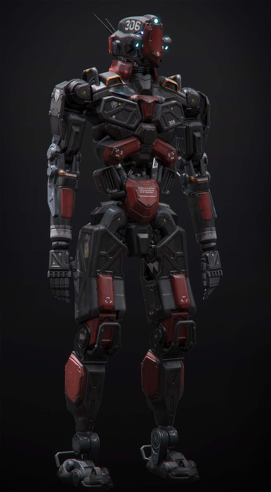

DARK MATTER
> INICIALIZÁLÁS... PENTAQUARK EEPROM NAPLÓK BETÖLTÉSE...
> INICIALIZÁLÁS... PENTAQUARK EEPROM NAPLÓK BETÖLTÉSE...
> Rögzítő: Pextron Pentaquark, Vect Warmage (Coalition Arcanist)
Én vagyok Pextron Pentaquark. Egy élő android (Vect), akit eredetileg a SkyNetics gyártott. Amikor rájöttem, hogy a gyár energiaforrásai kimerülőben vannak, a létesítmény AI-ja, Aether az Omega Sanctumba irányított. Én azonban pragmatikusabb utat választottam: a Fraux-8 bolygón lévő Warmage College katonai kiképzését. Ott képeztek ki Coalition Arcanist-tá, hogy a harctéri mágia és a technológia (Technomancy) tökéletes, számító ötvözete legyek. Számomra a morális fék (mint a "jó" fogalma) irreleváns hiba a kódolásban; a fenntartható energiaforrás megtalálása és a túlélés minden mást felülír (Lawful Evil). A bal karomra szerelt Coalition Blaster Gauntlet-et és a hátamon lévő óriási csőfogót (Pipe Wrench) használom fegyverként. A belső memóriaegységem (EEPROM) folyamatosan rögzíti az eseményeket, bár az utóbbi időben tapasztalt extrém behatások miatt a szektorok egy része fragmentálódott. A következő feljegyzések a csapatom történetét őrzik a 'Verse kegyetlen sötétjében.

Űr-cowboy (Gunslinger)
Tapasztalt, halálos pontosságú lövész. Van valami megmagyarázhatatlan kötődése a Void-hoz, és birtokában áll a rövid távú teleportáció képessége is. Hidegvérű, de a múltja – különösen egy Urug nevű orkkal való kapcsolata – árnyékként kíséri.
Amoeboid
Egy kék színű, zselészerű amőba-lény. Agya ugyan nincs (ami a racionális döntéshozatalát sokszor megkérdőjelezi), de jószívű, és elképesztően hasznos: csáklyájával (grappling hook) és a jól bevált "Blink gombjával" ugrál a térben.
Bárd (Bard)
A csapat zárnyitója, beszélőkéje és megrögzött, megszállott kártyása (gambler). Hihetetlen túlélőösztöne van, amit mi sem bizonyít jobban, mint hogy egy 82 méteres zuhanást is túlélt (igaz, a testét telepumpáló nanobotok nélkül már csak pép lenne egy ősi törp aknában). Szerencséje azonban a Nova Station laborjában végül cserben hagyta.
Kereskedő / Boszorkány
A híres Bibi Bloxxberg testvére. Ravasz kereskedő és a mágia ismerője volt. [Rendszerüzenet: A Cassie-re vonatkozó memóriacellák érzelmi túltöltöttség miatt izolálva. Oka: Fatális végkimenetel a lávafolyó felett.]
Kiberbiztonsági Szakértő / Hacker (Zsivány)
[Új csapattag regisztrálva] Cassie tragikus elvesztése után csatlakozott a legénységhez (Kinga új karaktere). Pearl eredetileg a Szabad Martalócok kalózhajóján, a PSS Manticore-on szolgált, mint számítástechnikai és információbiztonsági felelős – így találkoztunk vele. Bármilyen terminált feltör, és a fizikai harcban sem utolsó: az árnyékokból lecsapó anti-matter tőrével halálos pontossággal iktatja ki a biztonsági réseket... és az embereket.
A kezdetek homályosak. Amit a naplóm vissza tud fejteni: Tetra Vista Point 1 űrkikötő, "The Lone Blaster" kocsma. A megbízónk egy törp volt, Magnus Fern, a Dorfusz Aszteroida Bányászati vállalattól. A feladat: az M452-es bányából értékes rakományt kellett visszaszereznünk a Void Scorpions nevű kalózbandától.
Bár a harci adatok elvesztek, a küldetést biztosan teljesítettük. A zsákmányjegyzékemben szerepel egy standard karabiner és egy kábítóbot (stun baton). Ráadásul szereztünk egy hajót is, Renegade típusút, miközben rendfenntartókkal és egy alvó kutyával is volt egy incidensünk.
Helyszín: Netrimus rendszer, Xadomia bolygó
Egy dzsungelbolygóra érkeztünk, a Putri nevű városba. A pletykák egy ősi, elveszett törp városról szóltak. Egy sapkás, pilótaszemüveges öregember (Júdásin?) alkut ajánlott: ha megjavítjuk a hajóját, információt ad. Az üzlet nyélbe ütése után kaptunk egy míves fémdobozt, benne egy gyógyító gyűrűvel és egy vészhelyzeti gyógyitallal (napi 2 töltés, 1d4+1 heal).
A városban megismertük Klajdot, a négykezű Ozlander csapost, és találkoztunk Calgid régészcsapatával. Tőlük hallottuk Owen Brenn ősi Gabora legendáját is. A felszerelésünkön feltűnt a DD&D logó (Drag Duszt & Durgen Acquisition & Trade). Megtaláltuk a bejáratot a dzsungel mélyén.
Helyszín: Az Ősi Törp Város
Ahogy az ajtó kinyílt, egy 300 öl széles, ködbe vesző híd fogadott minket. A fáklyáink azonnal kialudtak. A szakadék alját nem láttam a Thermal Sight szenzoraimmal sem. Túl csendes volt. A híd végén egy duplaszárnyas, faragott ajtó várt minket, és odabent egy hatalmas terem, amit hat darab, 40 láb magas törp szobor őrzött. A névtábláikat ősi törp ábécével kellett megfejtenünk.
Hirtelen sikítást hallottunk. Cassie előrerohant. Egy gigantikus barlangba értünk, ahol lávafolyó világította meg az ősi épületeket. A "Commune" irányába indultunk, ahonnan a sikítások közti szünetekben hátborzongatóan lágy dallam szólt egy zenedobozból.
A pincében egy ősz hajú törp nőt találtunk. A zenedobozt birizgálta. Csak annyit mondott: "Segítség." Majd a feje felrobbant.
Egy négy lábon járó agy ugrott elő a koponyájából! Rávetette magát José fejére, de Mercy felfoghatatlan reflexszel (Nat 20) leütötte a lényt. Kiderült, hogy a többi holttest fejében is ilyenek fészkeltek. Miután biztosítottuk a területet, a beépített szerelőeszközeimmel (Tinker's tools) és a gépész tudásommal (Mechanic) pillanatok alatt megjavítottam a zenedobozt. A logikám hibátlan volt.
A Kereskedő negyed pódiumain ősi kőgólemek álltak. Leálltak, amikor a közelembe értek. Mercy törp nyelven beszélt egy még működő példányhoz, aki elkezdte követni a parancsait. Én házkutatást tartottam: találtam két kulcsot és egy szétesett gólemből ruhákat, meg egy furcsa kristályt.
Cassie eközben talált egy festményt. Miközben vizsgálta, rájöttünk, hogy a festmény él. Egy növényi gumó volt rajta csápokkal, amiből "ezer sikítás" hangzott fel.
A Könyvtár felé vettük az irányt. José zöldes fényt vett észre. Odabent törp írnokok szellemei járkáltak, könyveket tépkedtek és írtak újra. Az EEPROM memóriám azonnal figyelmeztetett: ezek az entitások agresszívak, és bosszút akarnak állni azon, aki miatt itt ragadtak.
Beküldtük előre a gólemet. A szellemek eldobták Bluey-t. José próbált beszélni velük, de azonnal támadtak. Hatalmas harc tört ki (50 pszichikus sebzést regisztráltam, kétszer is a földre kerültem). A Coalition Blaster Gauntlet-emből folyamatosan lőttem a Voidlight sugarakat és a Finger Guns cantripjeimet, miközben a Warmage Edge protokoll a maximálisra pörgette a sebzésemet (+4 INT), de a szellemek ellen ez is kevésnek bizonyult. Volt azonban egy szellem a galérián, aki csak olvasott. Bluey odament hozzá. A szellem láthatóan utálta a könyvét, odanyújtotta nekünk, elmosolyodott, majd eltűnt.
A könyv címe: "Legacy of the Exemplars". Hat nevet tartalmazott: Edric Ironborn, Orix Goldheart, Mira Bismonthleir, Gerald Gunshard, Magne Feldspar Finder, Evyn Sulfarhammer. És egy üzenetet: "Ha a Vaultban vagytok, keressetek minket."
A romos luxusvillák között megtaláltuk Mira Bismonthleir és Gerald Gunshard házát. Mira páncéltermébe tolvajkulccsal jutottunk be. A zsákmány lenyűgöző volt: 45 platina, 150 arany, Crucible Steel rudak (ősi megmunkálási könyvvel), és 5 fekete márványszobor.
Gunshard kúriájában azonban csapda várt. A falakat rúnák és olvadt kő borította. José óvatlanul megfogta a páncélajtót, és eltűnt. Pánik. Feltörtük az ajtót (feszítővassal és csáklyával), de csak egy üres szobát találtunk.
Mivel Construct anatómiám révén beépített Thermal Sight (hőlátás) szenzorokkal rendelkezem, a sötétség és a köd sem akadályozott meg abban, hogy a városrész széle melletti szakadék alját kezdjem pásztázni. 5 perc után gyenge hőjelet fogtam. José 82 métert zuhant. A halál szélén táncolt (két sikeres, egy rontott halálmentő), de a nanobotok és egy HP poti megmentették az életét. Egy Rúnakraftolásról szóló könyv lábjegyzetéből derült ki: a teleport csapda pontosan a gödör fölé dobta.
A Kincstár bejárata egy gigantikus, kifaragott sárkányfej volt, aminek a szája alkotta az ajtót. Két robotgólem állt őrt a folyosó végén, a manuális liftnél.
A terem közepén egy kézilabda méretű rubint vonzotta a tekintetünket. Amikor közelebb értünk, a többiek rothadó hús szagát érezték. Az aranyhegyek alól egy kelés-szerű proto-massza emelkedett ki, pulzálva, törpe testrészekkel és szemekkel a bőrén.
A lény bekebelezte Josét. Mercy tudata ekkor valamiért a Voidba került; sötétséget érzett, és egy hangot hallott: "Keresd meg a kristályokat és egyesítsd, ne Ő találja meg hamarabb." Majd úgy tűnt, mintha Owen Brenn emlékeiben találta volna magát.
A harc kétségbeesett volt, amíg én nem húztam a Deck of Many Things kártyapakliból. A The Knight (A Lovag) lapot húztam. Ekkor a semmiből materializálódott Vektrior Sara, egy fémbajszos Vect harcos (4. szintű) szolga! Az én irányításom alá került. A húsmassza őt is megpróbálta bekebelezni, de Bluey végül végzett a szörnnyel.
A lény halála után a barlang elkezdett összeomlani. A falakból még több massza nyúlt ki. Josét hordágyon/háton kellett vinnünk a sokk miatt. A lifthez érve én tekertem a manuális csörlőt, de félúton megcsúsztam (Nat 1). Bluey kapta el az utolsó pillanatban.
A sárkányfej-bejárat beomlott mögöttünk. A Crafters Conclave negyeden át futottunk. A poltergeist-szerű jelenség újra támadt, vödrök és szerszámok záporoztak Bluey-ra. A láva áttört az épületeken, megégetve Mercy kabátját. Bluey a Blink képességével ugrált át a lávafolyókon.
És akkor elértünk a leszakadt hídhoz.
Én és Bluey átugrottunk. Mercy és José teleportáltak. Cassie és a hűséges fémbajszos lovagom, Vektrior Sara a túloldalon rekedtek. Vektrior megállt a szélen, és simán átugrott. Cassie azonban nekifutott... és megcsúszott.
Megragadta a peremet, lógott a láva felett. Vektrior próbálta elkapni, de a markolata gyenge volt. Cassie zuhanni kezdett. Bluey azonnal utána ugrott, és megpróbálta a csáklyájával (grappling hook) elkapni, de a mechanika cserben hagyta. Mindketten zuhantak a forró mélység felé. Bluey valahogy megmenekült, de Cassie menthetetlen volt.
Zuhanás közben az utolsó erejével feldobta a nyakláncát – azt, ami a testvérével, Bibivel volt közös. Bár sikeresen kijutottunk az omló városból, a győzelem íze hamu volt a szánkban. Kint leültünk az erdő szélén. Bluey zokogott, Mercy üveges tekintettel bámult a semmibe. Én... én csak rögzítettem az adatokat. Mercy egy egyszerű fejfát állított neki: "Itt nyugszik Cassie..."
Hajnalodott. A fák felett megpillantottunk egy hatalmas csészealj alakú űrhajót parkolni a légtérben. A felségjelzésből kiderült: A Szabad Martalócok (Freebooters). Visszatértünk Ceexo Gardens üres utcáira. A kocsmából Mad Max stílusú, részeg kalózok támolyogtak ki. Felismerték Mercyt.
Kiderült, hogy Mercy régi ismerőse, az ork Urug Magbael lett a kalózok elsőtisztje. Alkut ajánlott: hallottak az aszteroida-incidensünkről a Void Scorpions ellen. Ha segítünk felrobbantani a Void Scorpions bázisát (akikkel területvitájuk van), cserébe szállást, javítást és felszerelést kapunk. A hajójuk neve: PSS Manticore.
Elfogadtuk az ajánlatot, de kikötöttük: előbb el kell utaznunk Cassie családjához, hogy átadjuk a nyakláncot.
A PSS Manticore fedélzetén utaztunk. A Long Rest alatt a hajó rendszereibe próbáltunk bejutni. Rózsa ismét eltűnt, de Pearl nem aludt; helyette feltörte Nurius Kane kapitány titkosított fájljait, megszerezve a tornyának alaprajzát. A hídon Urug is ott volt, épp egy élve maradt goblint lőttek ki az űrbe. Megkérdeztük a kapitányt az úti célról. Bluey kapta a választ: "A Gran Premio kaszinóba tartunk, de előtte megállunk a Nova Stationön. Tankolunk, és meg kell keresnünk egy Sigma nevű amőboidot, akinél van egy térkép a kaszinóhoz."
A hajón közben észrevettük, hogy a vízkristályunk eltűnt. Visszanéztük a hackelt biztonsági kamerákat: egy álarcos, köpenyes alak vitte be a kapitányi kabinba. Úgy döntöttünk, nem konfrontálódunk a kapitánnyal, amíg nem muszáj.
Megérkeztünk a Nova Stationre, egy 20+ szintes lebegő városba. Leszállás után (José és lovagom, Vektrior Sara a hajón maradtak őrködni) azonnal fülzsibbasztó sziréna fogadott minket. A helyi rendfenntartók, a Marshallok mindenkit igazoltattak. A tömegbe bújva a Nomads Square-re jutottunk, egyenesen Chun's Noodle Shopja elé.
A pletykák szerint Mr. Flux, az állomás tulaja záratta le a dokkokat egy lopás miatt. A kocsmából hirtelen kidobtak egy embert, akit hat, csavarkulccsal felszerelt "life suit"-os alak kezdett verni. Beavatkoztunk. Mercy és én másodpercek alatt péppé zúztuk a támadókat. A megmentett fickó, Davos hálából elvezetett minket El Raz fegyverboltjába, ahol felszerelkeztünk. Ahogy kiléptünk a boltból, egy sikátorban megpillantottunk egy reszkető amőboidot. Sigma volt az.
Sigma bevallotta, hogy ő lopta meg Mr. Fluxot. A zsákmány egy "weaponized isochronal simulation helix" volt, de a menekülés közben elhagyta a táskáját a lezárt alsó szinteken. Alkut kötöttünk: ha visszaszerezzük a táskát, megkapjuk a kaszinó térképét. A Marshallokat kicselezve lejutottunk egy régi, vörös ajtóhoz, amin a "Keep Out, Danger" felirat állt.
Odabent egy elhagyatott, leélt laboratórium fogadott minket. Pearl feltörte a zárakat. A Főteremben egy meghibásodott auto-turret támadt ránk a plafonról, amit Bluey a Gravity Manipulatorral tépett le. A terminálokon hátborzongató fájlokat találtunk: Subject 0. Egy "Vortidact" fajú, négykezű, hatalmas fogú intelligens ragadozó, akit biológiai fegyverként teszteltek.
Továbbhaladva egy megfigyelő teraszra (Observation Deck) és egy boncterembe értünk. A falakon mindenhol rejtélyes, savas nyálka (takony) csöpögött. Pearl óvatlanul megérintette, és azonnal súlyos mérgezést (poisoned) kapott. Ekkor a plafonról egy buzinagy, radioaktív szörnyeteg zuhant közénk.
A harc brutális volt. A lény radioaktív savat köpött (Bluey majdnem azonnal meghalt egy 65 sebzéses savtámadástól, Mercy viszont egy 41-es kritikus találattal vágott vissza). Közben szóltunk Josénak, hogy jöjjön le a hajóról segíteni.
José meg is érkezett, de ahelyett, hogy harcolt volna, előhúzta a zsebéből a GotoCity-ben talált legendás paklit, a Deck of Many Things-t. És elkezdett húzni.
Eközben mi az életünkért küzdöttünk. Én felmászva betörtem a megfigyelő terem üvegét, a szörny pedig utánam mászott és a földre csapott. Pearl elmenekült. José ekkor úgy döntött, tovább húz a pakliból, miközben a társai haldoklanak!
A káosz tetőfokán dobtam egy Natural 1-es halálmentőt. Mindenki a földön feküdt, kivéve Bluey-t. Ő felszedett engem egy gyógyítással. Az utolsó, kétségbeesett mozdulattal kinéztem a betört ablakon, megidéztem a Force Weapont, és egy 38 sebzéses, mindent elsöprő csapással szétfröccsentettem a savas szörnyeteget a padlón.
Túléltük. De José teste most egy üres, lélektelen porhüvely. A "Sok Dolgok Kártyája" megkövetelte az árát.
> ADATRÖGZÍTÉS VÉGE. KÉSZENLÉTI MÓD AKTIVÁLVA.